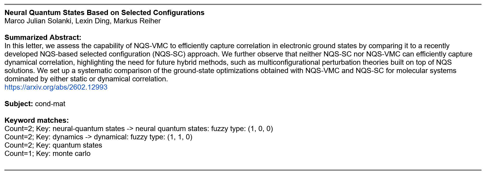

Auto arXiv search
One of my more useful personal projects is a small tool I built to make it easier to keep up with new papers on the arXiv. I was frustrated with manually checking categories every day, so I wrote a script to filter and deliver only what I actually wanted to see.
The project started as a basic keyword searcher, but I gradually added features to make it more useful:
- Custom filtering by category, keywords, and authors.
- Daily or weekly email summaries of matching papers.
- Weighting paper importance through filtering so that the most relevant papers are shown first.
What began as a quick utility turned into one of the most useful scripts I've written for myself. It saves time, reduces the noise of irrelevant papers, and makes it easier to keep up with topics I care about without falling behind. As an additional bonus I've found useful papers in categories I didn't used to check often using this tool.
Like a lot of my projects, this grew out of a personal need but became a chance to practice building something more complete.
Example, description, and setup
The below image shows a single paper returned by the project, taken from the full email shown to the right. Each paper returned specifies the subject it was found in as well as the keyword and author matches that were found.
The first setting used is the list of arxiv subjects to be searched. The arxiv-paper-search project checks the current day's rss feed for each of the chosen subjects. From there sets of keywords are established within groups. For example, adding the group ('NN', ['neural-network', 'machine learning']) ensures the title and abstract of a paper will be searched for both 'neural-network' and 'machine learning' with the single group identifier of 'NN' used to label that either has been found. Additionally, a list of authors can be included which will be searched for by full name and first initial with last name.
Finally, the identified aspects of interest are passed into a customizable function which returns a number indicating how relevant the paper is or if it is not to be kept. My version of this function looks for any paper which includes neural network quantum states, any paper which includes authors from my watched list, or any other paper which fits two or more of my keyword groups.